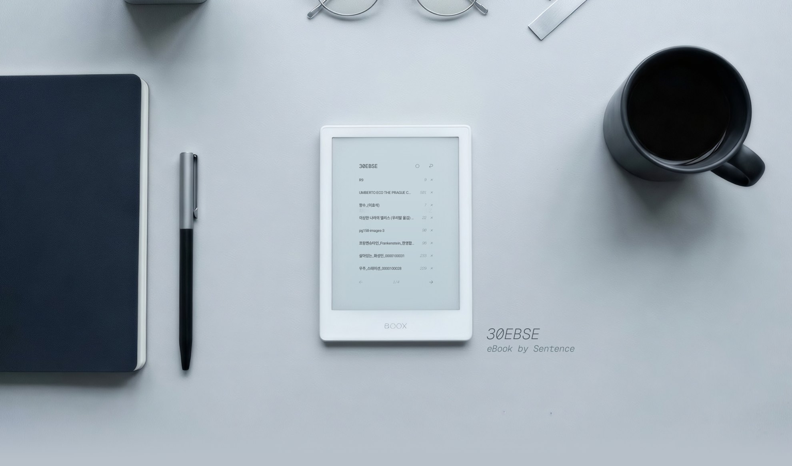
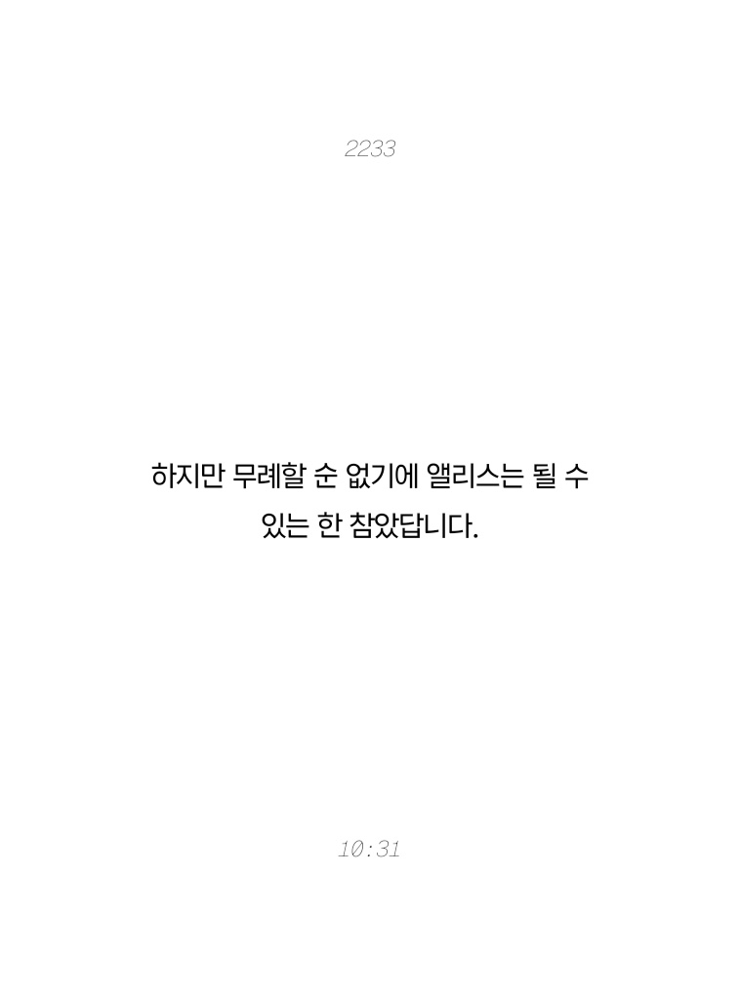
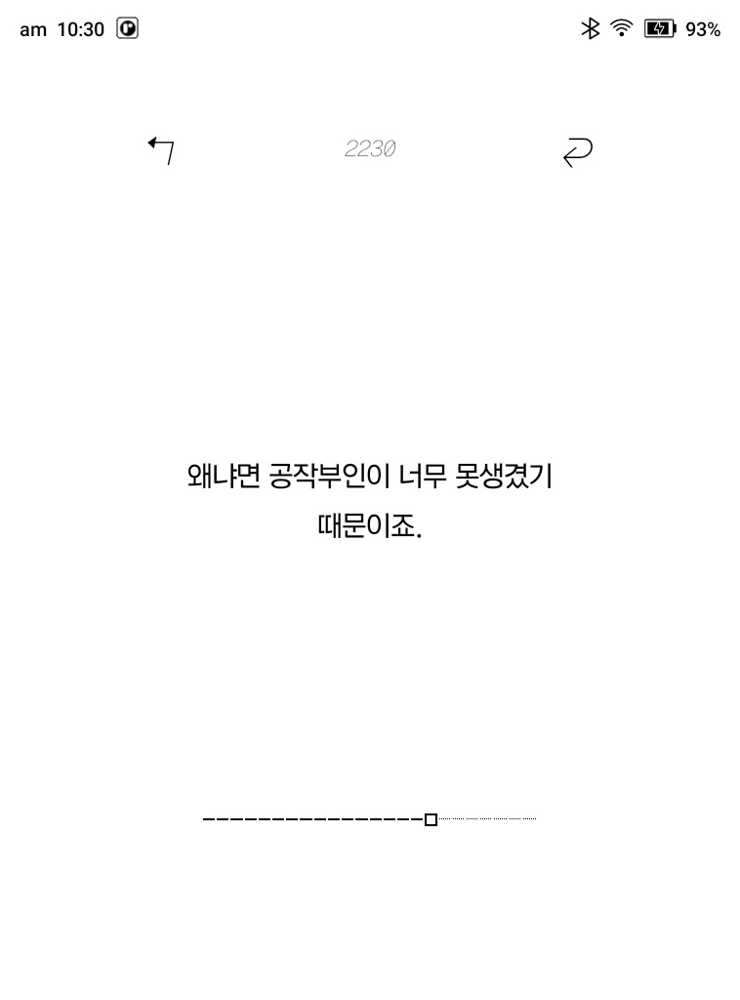
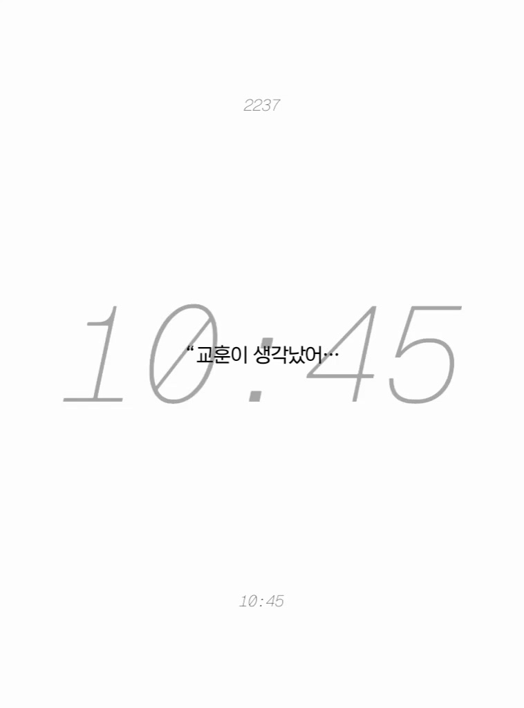
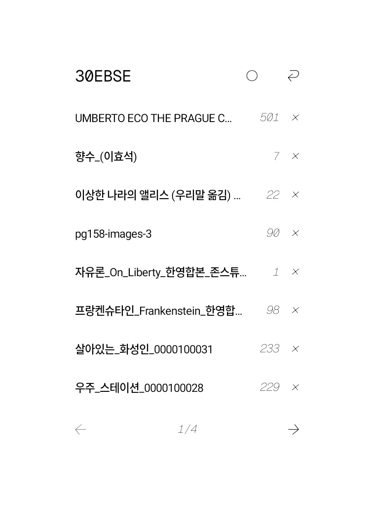
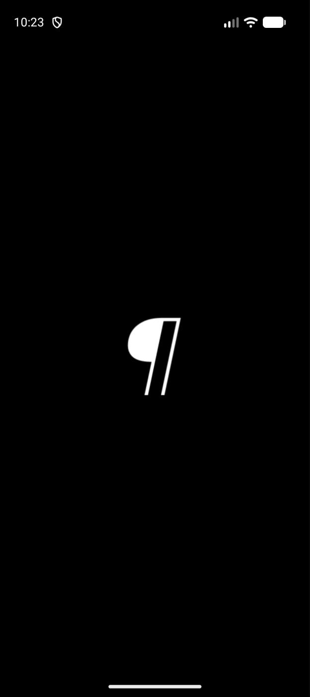
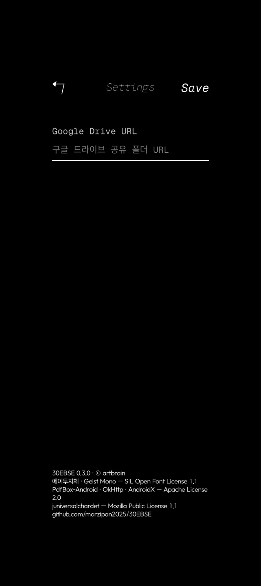
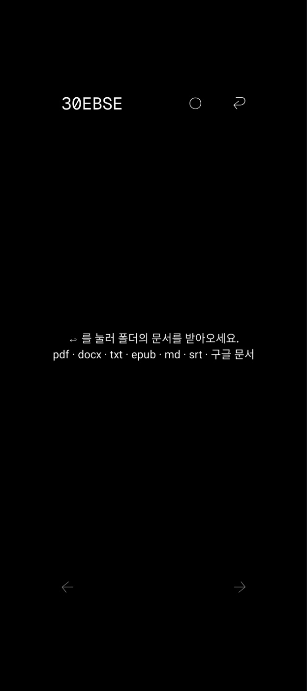

한 쪽에 한 문장씩.
구글 드라이브 폴더에 넣어 둔 글을 e-ink 화면에서 천천히 읽는 리더.
Android 11 이상 · 계정·로그인 없음 · 무료
Reading
긴 글도 한 문장씩 넘기면 가볍습니다. 화면 가운데 문장 하나, 위에는 문장 번호, 아래에는 시각. 그 밖에는 아무것도 없습니다.



Library
구글 드라이브에 폴더를 만들고 읽을 글을 넣으세요. 하위 폴더까지 모두 목록에 올라오고, 새로 넣은 파일은 이름만 들어왔다가 누르는 순간 받습니다. 읽던 자리는 글마다 기억합니다.

On your phone, too
e-ink 기기를 두고 만들었지만, 안드로이드 폰에서도 그대로 돌아갑니다.



How to start
FAQ
Automatically enable freezing after installing an app을 꺼 두세요.